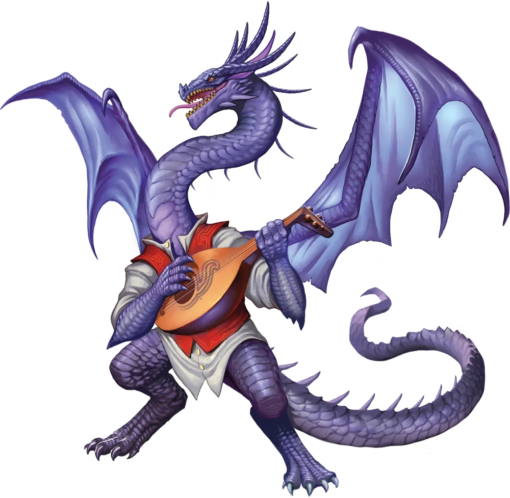
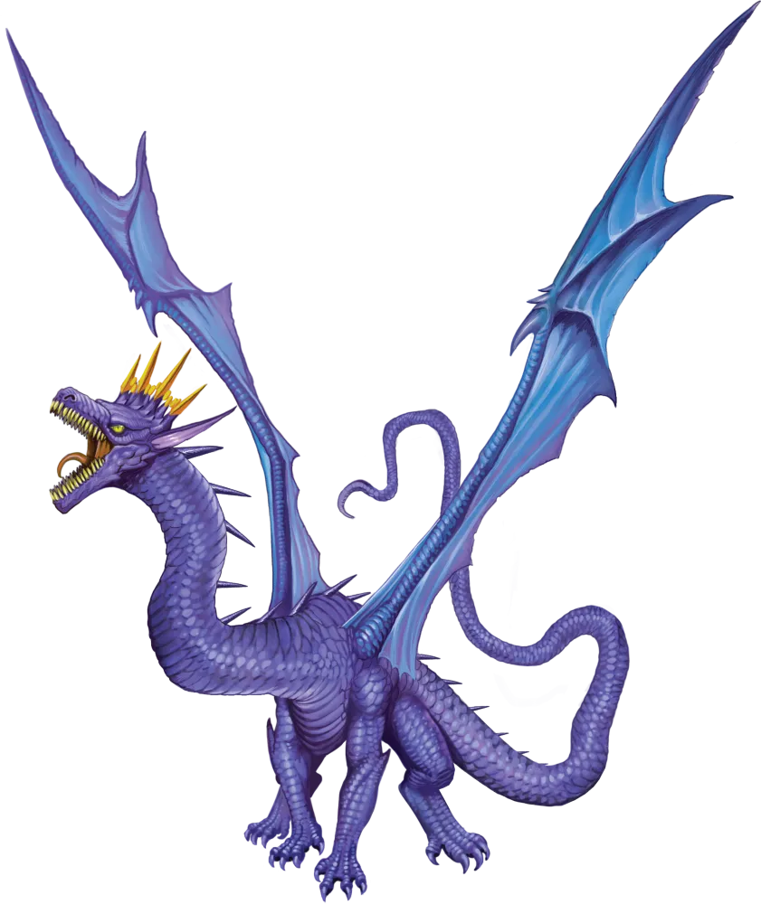
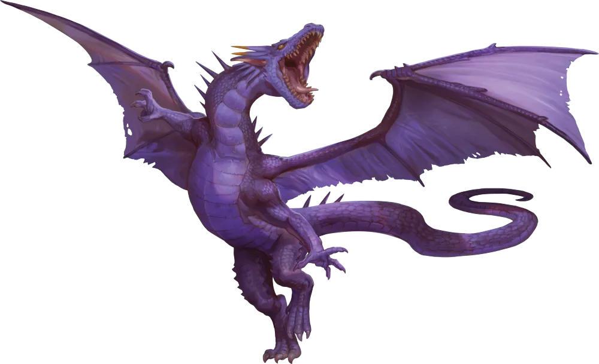

|
巨龙亘古长存，伟力堪比传说，令世间万族为之敬畏、战栗与向往。在某些文化中，巨龙本身便是力量的象征；而在另一些文化里，它们则是王权的先驱。但对巨龙而言，这不过是它们的本色而已。这一朴素的真理从根本上塑造了巨龙与其他种族之间的关系。然而，并非所有巨龙都像人类故事书中所描绘的那样，终日沉睡在堆满财宝的洞窟里，坐等某个鲁莽的冒险者斗胆前来觊觎它们的宝库。有时候，冒险者正是巨龙自己！ 你出身于一脉精明老辣的精类政客世系。你属于仙灵龙家族的一员。你的关联伤害类型为挥砍，且你的吐息武器为 15 尺锥状的参差碎镜片，需进行敏捷豁免。 巨龙特质属性值提升。你的魅力值提升 2 点。你自选的一项属性值提升 1 点。 年龄。任何年龄段的巨龙都可以举行永恒之光仪式，因此哪怕是一条刚完成仪式的初生永光龙，严格来说也可能已经活了数千岁。不过，仪式澎湃的魔法能量会洗去衰老的痕迹。从仪式中苏醒的初生永光龙洋溢着青春活力与无限潜能。尽管部分学者持不同看法，但只要不死于暴力或其他灾祸，永光龙的寿命与传统派巨龙同样漫长。 阵营。永光龙的龙族血统会强烈影响其信念，但影响程度远不如同血统的传统派巨龙。例如，银永光龙往往是善良的捍卫者，而黑永光龙则往往狡诈刻薄。然而，永光龙深知龙脉并非不可违逆的宿命。任何永光龙都可以完全抛弃先祖的旧习，去开拓属于自己的道路。 体型。除非一条永光龙将自身魔力专注于增大体型（许多永光龙都会这样做），否则它们的体型并不会比常见的类人种族更大。你的体型可在小型或中型之间自选。 速度。你的基础步行速度为 30 尺。 黑暗视觉。你同样具备传统派巨龙的敏锐感官。在距离你 60 尺范围内，你可以将微光光照视作明亮光照，将黑暗视作微光光照。你在黑暗中无法分辨颜色，只能看到灰度的影像。 龙之馈赠。你从巨龙职业所列的龙之馈赠中获得一项龙之馈赠。如果某项馈赠具有先决条件，你必须满足其先决条件才能获得它。 龙类。你的生物种类为龙类，而非类人生物。 天生武器。除常规的徒手打击外，你还获得两种天生武器攻击：啃咬攻击与爪击攻击。你的啃咬攻击造成 1d6 点穿刺伤害；你的爪击攻击造成 1d4 点挥砍伤害。 你必须至少有一只手空闲才能发动爪击攻击。 你在进行爪击攻击的攻击检定和伤害掷骰时可以使用敏捷代替力量，但啃咬攻击不适用。 语言。你能够说、读、写通用语和龙语。 个人叙事。你背负着一段个人叙事，无论是决意拥抱它、改写它，还是将其彻底抛诸脑后。无论如何，对自身叙事的洞悉令你对自己的能力充满自信、深知自身弱点，并在重压之下依然冷静沉着。你对抗会使你陷入恐慌状态的效应时进行的豁免具有优势。 永光王庭龙背景设定大多数王庭龙都热衷于精心构筑属于自己的魔法领地、建立自己的王庭，并对一切途经此地的生灵行使生杀予夺的权柄。坐镇于这处安全港湾之中，他们尽情演绎着自身的叙事，一头扎进精类政治、王庭交锋与传奇故事交织而成的错综巨网。成为永光龙与这些本能冲动及传统规范并非水火不容，但确实是一场严峻挑战。许多永光王庭龙在渡过这段蜕变期时都会暂时舍弃自己的王庭，以免在力量暂时衰弱的状态下勉强周旋于尔虞我诈的王庭权谋之中。 传统派王庭龙认为，成为永光龙之举无异于企图将自身原有的叙事偷换为另一段叙事――这表明该永光龙正在违逆自身宿命，不仅搅乱了自己的既有格局，更打乱了所有叙事与之交织缠绕之人的命运轨迹。除了这种根深蒂固的排斥心态之外，任何打算成为永光龙的王庭龙还必须时刻提防致命危险：他们命中注定的仇敌与宿敌必定会趁永光龙初成时的虚弱期发难，抓住这一千载难逢的机会发动袭击、强占永光龙的王庭……甚至做出更残酷的举动。尽管有些王庭龙试图向同侪隐瞒自己的蜕变，打算在数年乃至数十年间暗中积蓄力量，但精类王庭的本质决定了这一计策极难成功。包括希族与王庭龙在内的精类无不好奇多事、耳目灵通；流言蜚语与奇闻轶事本就是精类王庭的命脉所在，任何秘密在此都出了名地难以保守――更何况是永恒之光仪式这等势必引发剧变、动摇政治平衡的惊天秘闻。 大多数永光王庭龙都将永恒之光仪式视作一场解脱――一种改写自身叙事与宿命、甚至将其彻底蜕去的途径，从而重塑为某种焕然一新的存在。部分经历蜕变的个体仍会保留先前的叙事，只是换以全新的方式将其延续下去；但大多数永光王庭龙都会采纳一段由自己亲手构思的新叙事，待自认实力足以捍卫并统治领地时再另行开辟一座新王庭，又或者干脆将“叙事”这一整套概念彻底抛诸脑后。无论一条王庭龙抱有怎样的理念与规划，他们几乎无一例外都会暂时离开精类王庭一段时日，或者至少暂缓建立属于自己的王庭，以免在早期虚弱阶段树敌过多。相反，他们往往会迈向更广阔的世界，去体验一段摆脱沉重期许束缚的快意冒险人生。 王庭龙长袖善舞、机敏狡黠，深谙操纵人心与达成所愿之道。他们能迅速结交盟友，且很少为道德困境所羁绊，因而是一类适应力极强的可靠同伴。不过相处日久之后，王庭龙也可能成为令人头疼的合作对象――因为他们总是习惯性地夺取领导地位，向同伴强加规矩，并在不知不觉间把所在的社交团体改造成属于自己的微型王庭，而他们自己通常根本意识不到其中的相似与呼应之处。由于王庭龙不太在意世俗道德，却素有信守契约的良好声誉，只要他们不介意听从雇主调遣，往往能成为极其出色的雇佣兵。 王庭龙在战术风格与热忱喜好上千姿百态，恰与他们丰富多样的叙事相得益彰，因此他们可能会涉足形形色色的职业。不过，大多数王庭龙更偏爱那些要么张扬夺目、气势恢宏，要么暗藏机锋、运筹帷幄的职业。吟游诗人在他们之中尤为普遍，因为这一职业与故事传说渊源深厚，既具备左右叙事的力量，又精通纵横捭阖的政治手腕。术士同样相当常见，游荡者亦然――尤其是在那些热衷于权谋博弈的王庭龙之中。 王庭对簿之日永光王庭龙身处一个充斥着仙灵权谋与暗算倾轧的世界，因此他们想要隐瞒自己的永光龙身份以及随之而来的暂时虚弱，实在是顺理成章之举――尽管这听起来未免令人惋惜：还请体谅一下那些苦苦想要统计永光王庭龙确切数量的可怜学者吧！话虽如此，要想守住这个秘密绝非易事，他们的伪装往往会在某场王庭盛会上迎来摊牌时刻――那可能是一场无法推脱的宴会或社交应酬，亦或是一道不容抗命的君王传召。这场戏剧究竟如何收场，对每条王庭龙而言各不相同：轻则不过是当众出丑、沦为笑柄，重则可能演变为决斗、公开谴责，乃至惨遭流放。 延伸阅读：对应怪物图鉴：王庭龙 ・ 主书通用巨龙种族特质 ・ 巨龙职业 ・ 本卷新增龙之馈赠 |
 王庭龙（Court Dragon）  王庭龙  王庭龙 |